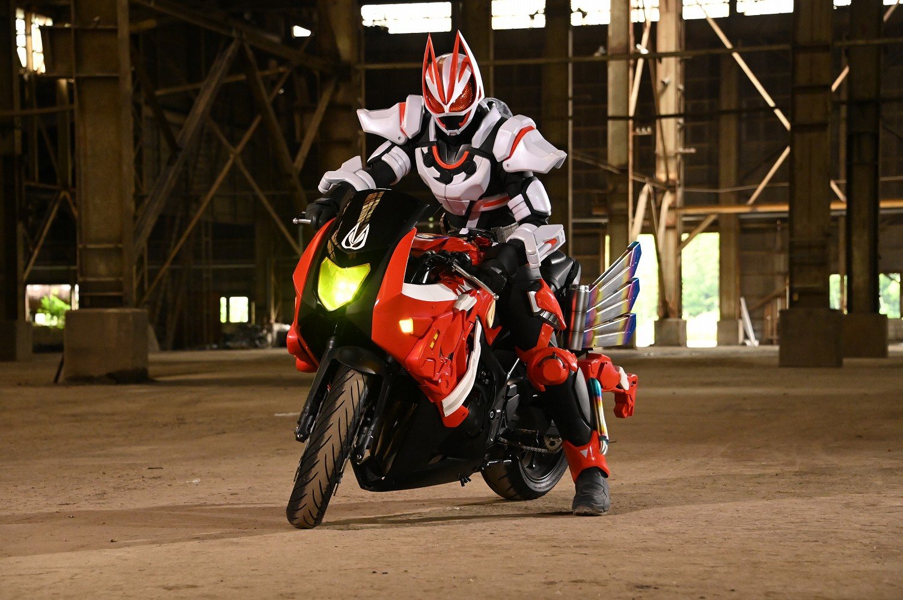
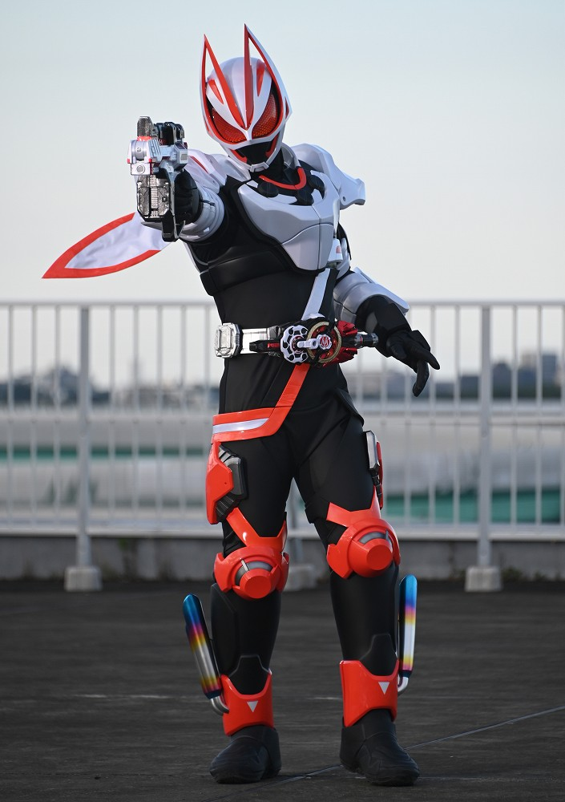
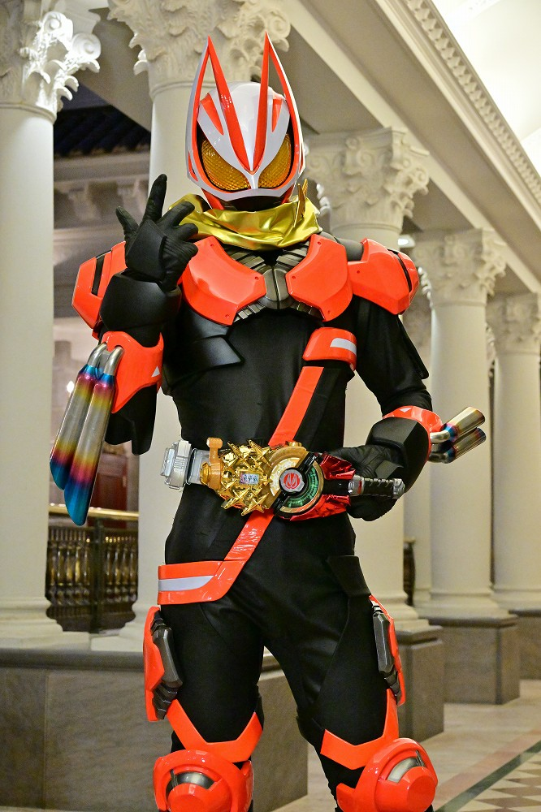
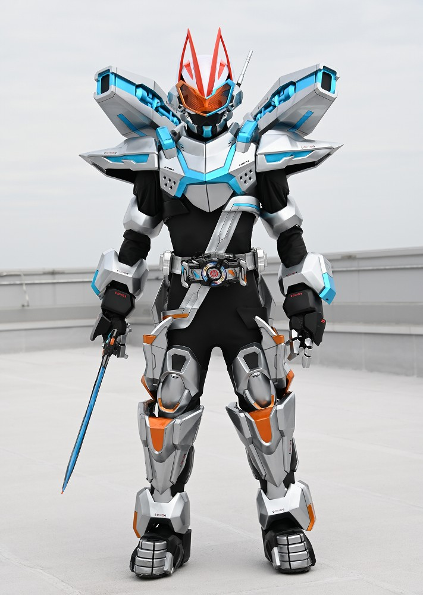
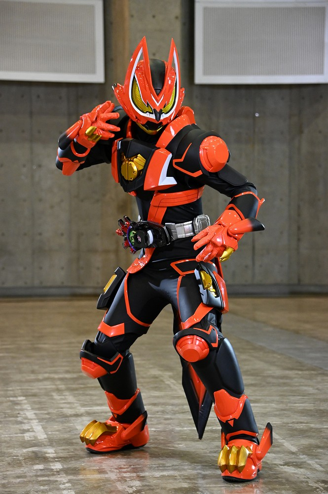
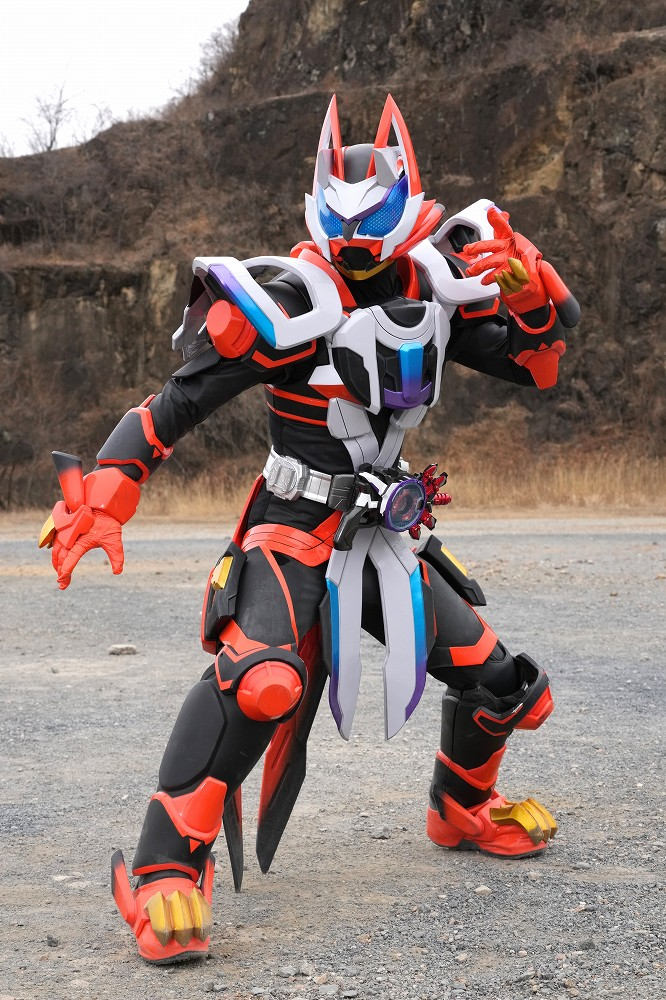
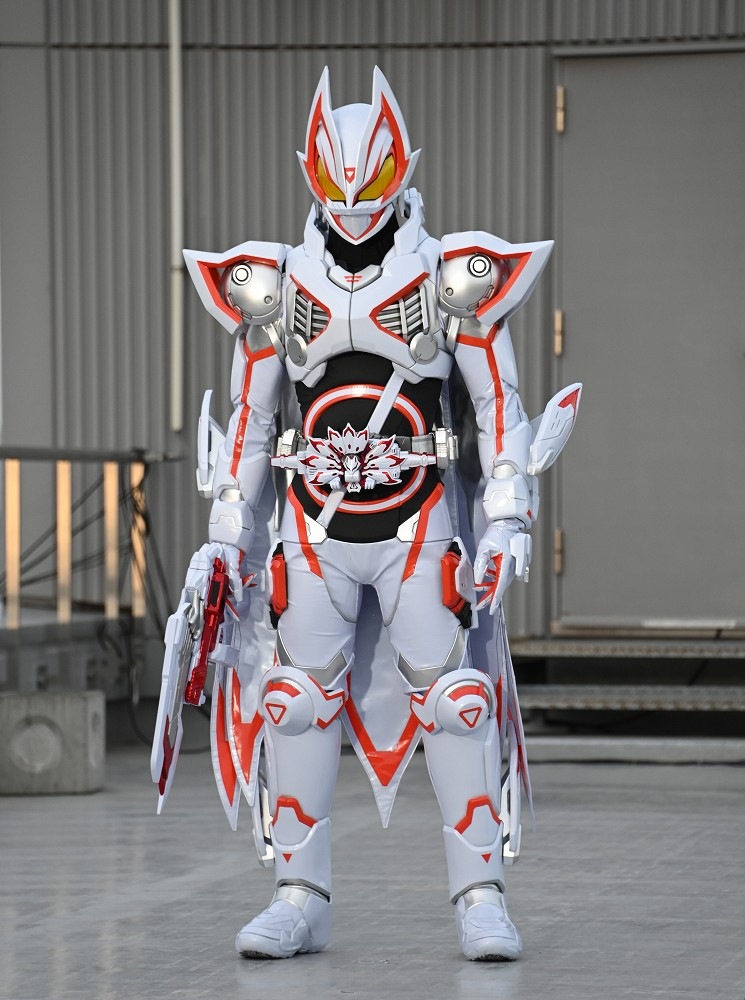

2022年から放送された「仮面ライダーギーツ」に登場する仮面ライダー
変身者は浮世英寿。デザイアドライバーとレイズバックルを使い変身する。
トリッキーな戦いが得意。
基本形態はマグナムブーストフォーム。
身長：205.2cm 体重：88.7kg パンチ力：2.4t キック力:58.7t ジャンプ力：ひと跳び78m 走力：100mを2.7秒程度

デザイアドライバーにバックルを最大2つ装着させ、変身する。
ドライバーを回転することで、腕が足に、足が腕になる。
腕に装着させていたバックルが足に装着される。
絵面がとんでもない。
リアル型の勝ち残りゲーム。
1位になることで願いをかなえることができる。
敵に負けたり、ゲームに脱落した場合、死ぬ場合や、願いを忘れてしまうリスクが伴う。
ジャマトと呼ばれる怪人を倒すことでポイントを得られることが多い。
誰が参戦者として選ばれるかは分からない。

マグナムブーストフォーム
「マグナム」と「ブースト」レイズバックルで変身
マグナムで遠距離、ブーストで接近戦も可能。
ブースト自体のスペックが高く、並大抵の敵はこれで倒せる。
基本フォームでありながら、劇中での登場は5回ほど。

フィーバーブーストフォーム
「フィーバー」と「ブースト」レイズバックルで変身
フィーバーはスロット型のバックルで出た目により、
発動する武装が違う。画像は大当たりを引いたもの。
活躍わずか1回。

コマンドフォーム
「コマンド」ツインバックルで変身
レイジングソードを使用し、飛行しながら攻撃を行う。
キャノンモード（画像）とジェットモードの2つを切り替えて戦闘を行う。

ブーストフォームマークⅡ
「ブーストマグナムⅡ」レイズバックルで変身
ブーストバックル5個分の力を誇り、ほとんどの敵は追いつくことができない。
変身解除後、急激な眠気に襲われるデメリットがある。（時差ボケ）

レーザーブーストフォーム
「ブーストマグナムⅡ」レイズバックルとレーザーレイズライザーという銃方変身アイテムを使い変身
デメリットを緩和し、長時間の変身が可能。
物質やエネルギーのベクトルを変え、壁に立ったり、空を飛んだりすることができる。

ギーツⅨ
「ブーストマグナムⅨ」レイズバックルで変身
創世の力という神の力を持っており、
敵の攻撃を無効化したり、破壊した建物を瞬時に再生したりなど、超常的な力を発揮する。
神様には時間は関係ないらしい。
仮面ライダー一覧